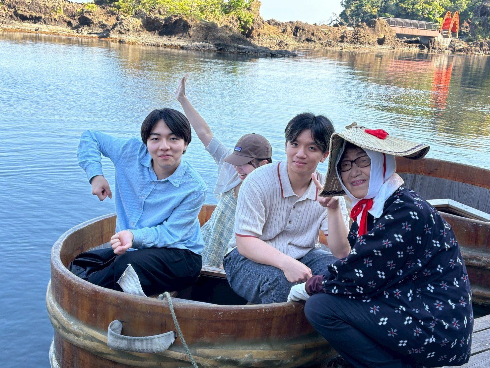
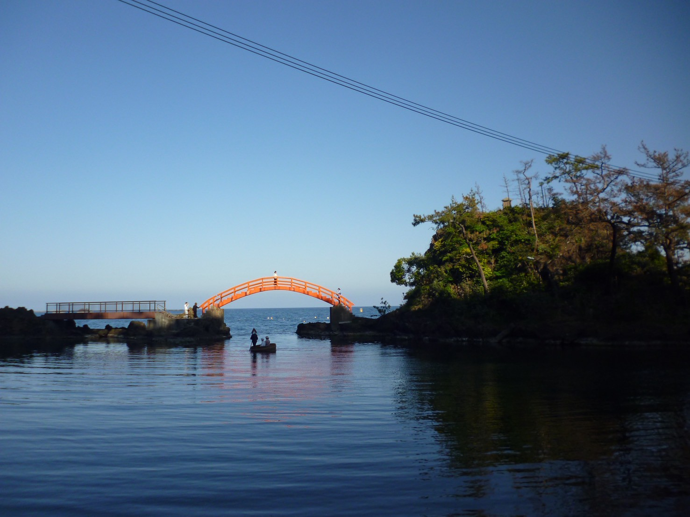
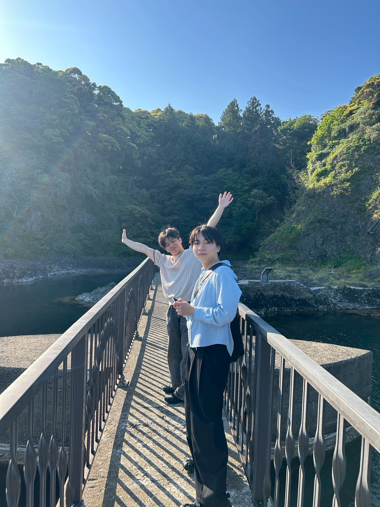

02 / OGIKO
小木港。たらい舟の水際。
小木港でたらい舟に乗った時間。ogiko は小木港として、港まわりの水面と旅の音をまとめる。






NOTE
學校藏のあとに向かった南側の港。水面、船、たらい舟の体験をひとまとまりの記憶として置いた。
小木港でたらい舟に乗った時間。ogiko は小木港として、港まわりの水面と旅の音をまとめる。



學校藏のあとに向かった南側の港。水面、船、たらい舟の体験をひとまとまりの記憶として置いた。